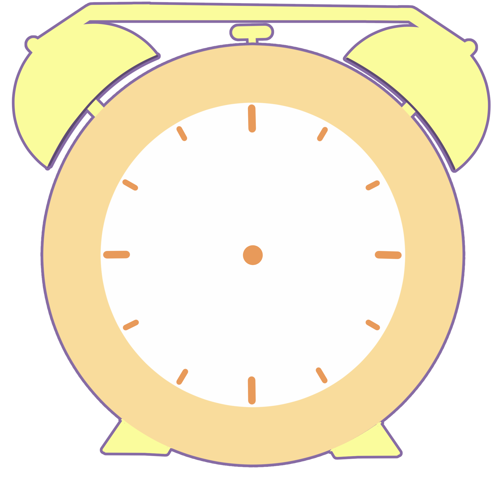

⚠
注意
⚠
ネットと現実世界の干渉によって、画面が乱れる場合があります。
卯たまごが話しかける場合があります。音量に注意してください。
このページを開いている時は、眠らないようにご注意ください。向こうの世界に連れていかれる場合があります。
OK
読込中...
TOP
STORY
UTAU
NOTE
CONTACT
読込中...
☆.。.:*・°☆.。.:*・°☆.。.:*・°☆.。.:*・°☆
読込中...
読込中...
☆.。.:*・°☆.。.:*・°☆.。.:*・°☆.。.:*・°☆
☆ CLOCK ☆

0
回
----.--.--
--- --:--
●
☆ LINK ☆
UTAU音源
利用規約
管理者について
☆ CATEGORY ☆
読込中…